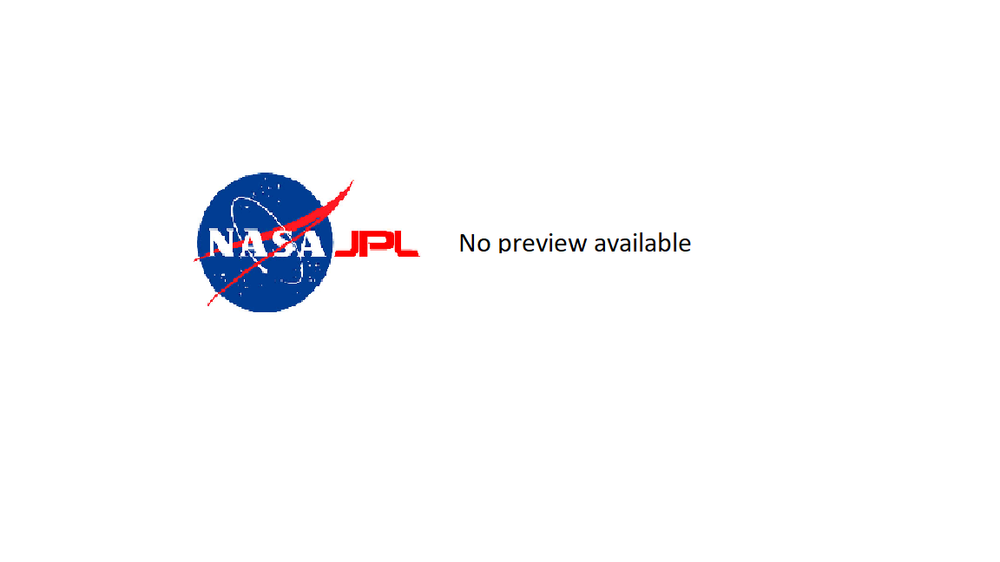
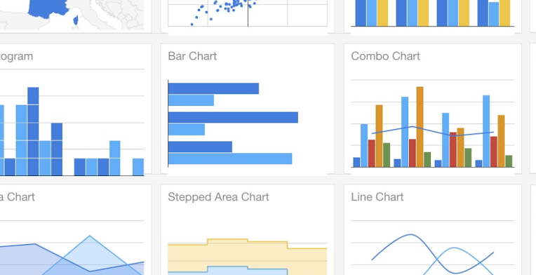

Production Control Department Dashboard
NASA JPL - Handed off 2024
Skills: Python Django, PHP, SQL
Production Control Department Dashboard
NASA JPL - Handed off 2024
Skills: Python Django, PHP, SQL
I worked in the production control department focusing on electronic fabrication manufacturing operations. I contributed by developing and maintaining a dashboard for technical and non-technical members to oversee every product that was in production. This helped to streamline manufacturing processes and ensure all staff members were updated on the current projects. Additional duties included guiding teams to use the application, creating new features based on a team's needs, and integrating APIs from other departments.
Cost Estimator
NASA JPL - Completed 2023
Skills: React, SQL, OracleERP, PowerBI
Cost Estimator
NASA JPL - Completed 2023
Skills: React, SQL, OracleERP, PowerBI
While assisting the finance team within the production control department, they mentioned that manufacturing teams reached out to them to get an estimate on the price for builds as to not overspend in the weekly billing reports. This tool aims to provide a close estimate to how much a board would cost given the additions needed. Aside from this, my team also assisted with automating the billing uploads that are sent to Oracle ERP, I maintained this script and ensured the uploads were properly filed.

Ground Control Station
NGCP - Completed 2023
Skills: TypeScript, Vue, Python, SQL
Ground Control Station
NGCP - Completed 2023
Skills: TypeScript, Vue, Python, SQL
I was the chief engineer and lead frontend developer for a telemetry dashboard that visualized missions for 3 unmanned vehicles. The team built endpoints and integrated real-time mission data to map the locations and track the battery and speed of each vehicle. We held progress presentations to senior Northrop Grumman engineers and my team received strong positive feedback.

Website Redesign
PolySec Lab - Handed off 2023
Skills: HTML, CSS, JavaScript
Website Redesign
PolySec Lab - Handed off 2023
Skills: HTML, CSS, JavaScript
I was tasked with updating the cybersecurity lab's website with projects from the past five years. I discussed with the teams what parts of their research they wanted displayed and occasionally assisted in the photography and logo creation.

County Water Usage Analysis
HAPII Lab - Completed 2022
Skills: HTML, CSS, D3.js
County Water Usage Analysis
HAPII Lab - Completed 2022
Skills: HTML, CSS, D3.js
I conducted research under Dr. Ben Steichen focused on human-computer interaction. I used data collected by CSUSB teams to create data visuals showcasing the water usage of the county. Using interactive visuals, as well as the eye-tracking systems provided by the lab, I noted the charts that got the most interest from users. This study was conducted in an effort to show policy makers and create need for water conservation actions to be taken place.